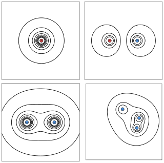

University Physics II

Electric Potential
PQ: Work Moving Charge
Charge $Q_0$=-2.76nC is at the origin. Charge $Q_1$=+3.00nC is initially placed at point A (0,2). How much work will it take to move charge $Q_1$ from point A to point B (-9,-7)?
PQ: Work Moving Charge (sol)
PQ: Ranking Configurations
Rank from lowest to highest the potential energies of the following configurations. Explain your conclusions.
PQ: Ranking Configurations (sol)
The system's energy is greatest when the forces are mostly repulsive, figure (A) has the highest concentration of like charges near each other and therefore has the greatest potential energy. Energy is the lowest when the system is mostly attractive forces, therefore figure (B) has the lowest potential energy. Figure (C) is an intermediate case between (A) and (B). \begin{equation} U_A>U_C>U_B \end{equation}
Detail solution on next slide down.PQ: Ranking Configurations (sol part 2)
For any configuration of 4 charges, the potential energy is \begin{equation} U=\sum_{i < j} U_{ij} = U_{1,2}+U_{1,3}+U_{1,4}+ U_{2,3}+U_{2,4}+ U_{3,4} \end{equation} $Q_1=Q_2=Q_3=-Q$, and $Q_4=+Q$ \begin{align} U&=kQ^2\left( \frac{1}{r_{1,2}}+\frac{1}{r_{1,3}}-\frac{1}{r_{1,4}}+ \frac{1}{r_{2,3}}-\frac{1}{r_{2,4}}-\frac{1}{r_{3,4}} \right) \\ & =\boxed{ kQ^2\left( \frac{1}{r_{1,2}}+\frac{1}{r_{1,3}}+\frac{1}{r_{2,3}} -\frac{1}{r_{1,4}}-\frac{1}{r_{2,4}}-\frac{1}{r_{3,4}} \right)} \end{align}
PQ: Potential Between Plates
Two opposite charged parallel plates are separated by 5m. The positive plate is located at $x$=-2.5m. Which curves represents the potential as a function of position between the plates? Explain your answer.
PQ: Potential Between Plates (sol)

PQ: Equipotential Lines
Each diagram depicts the equipotential lines.Draw the electric fields for diagram.

PQ: Equipotential Lines (sol)